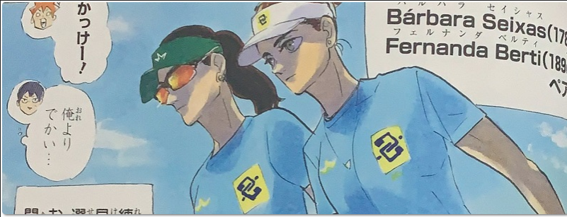

Haruichi Furudate, mangaká de 35 anos de idade. Nasceu no dia 07 de Março de 1983, em Iwate, no Japão. Atualmente trabalha para a maior editora do Japão, a Shueisha Inc.
Algumas outras curiosidades era que furudate era jogadora de voleibol no ensino médio e ocupou a posição de bloqueador central
Mangaká viveu em Iwate até se formar e depois se mudou para Miyagi (cidade onde a história de haikyuu tem seu começo)
Apesar por sempre interpretarem como "ele", o gênero de Furudate continua sendo um mistério. A maioria dos fãs interpretam como "ela" e justificam que se Furudate se revelasse a maioria do público deixaria de lado o mangá somente pelo fato de ser escrito e desenhado por uma mulher. O que mais fortalece a teoria é que Furudate nunca mostrou seu rosto, somente suas mãos desenhando Hinata, o que parecia realmente os de uma mulher, porém a imprensa norte americana sempre se referiu como "ele".
é animado pelo estúdio Production I.G é baseado na shonen Jump (do mesmo nome)
O mangá ganhou o 61º Prêmio Shogakukan Manga de melhor mangá shōnen em 2017. Em novembro de 2020, Haikyu !! teve mais de 50 milhões de cópias em circulação.
Durante a semana de 11 e 17 de maio de 2020, Haikyu !! foi o segundo mangá mais vendido no Top 10 Weekly Chart da Oricon, vendendo 473.858 cópias em uma semana e ficando apenas abaixo do Demon Slayer: Kimetsu no Yaiba .

Os próprios desenvolvedores do mangá vieram ao Brasil para fazer, de acordo com Furudate "um roteiro mais rico em detalhes" fazendo entrevistas com alguns jogadores sendo eles das fotos dos mangás. Claro, no mangá que está mais adiantado Hinata e Kageyama vem ao Brasil